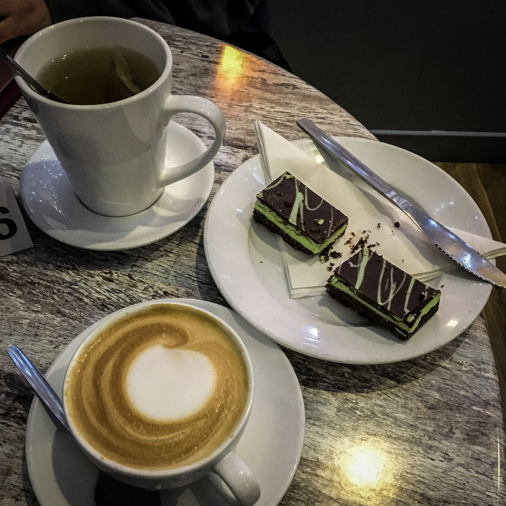
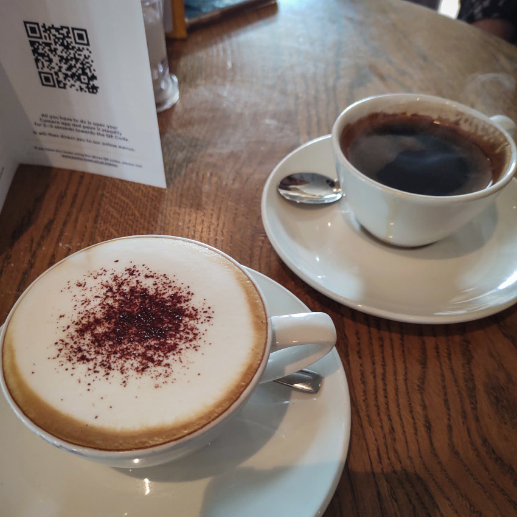

Highlands

Visocchi’s, Kirriemuir |
The Rod & Reel, Crianlarich |

Pine Marten, Aviemore
|

The Bothy Bar at Atholl Arms Hotel, Blair Atholl |

The Slanj, Tarbet |

The Bothy Bar at Atholl Arms Hotel, Blair Atholl |
Bridge of Orchy Hotel, Bridge of Orchy |

The Real Food Cafe, Tyndrum |

Clachaig Inn, Glencoe |
Ben Cruachan Inn, Lochawe |
Glasgow City & West
|
M&S Café, Sauchiehall Street |
iCafe, Merchant City |
.jpg)
M&S Café, Argyle Street |

iCafe, Merchant City |

iCafe, Merchant City |

Singl-End, Merchant City |
Singl-End, Merchant City |
Waterstones Café, Sauchiehall Street |

Pret A Manger, Queen Street |

Pret A Manger, Queen Street |

iCafe, Merchant City |

All Bar One, Glasgow |
|
iCafe, Merchant City |
Caffè Nero, House of Fraser |

M&S Café, Argyle Street |

John Lewis, Buchanan Galleries |
Glasgow South

M&S Café, Silverburn |

Real Flat 0/1, Giffnock |
Ca Va, Giffnock |

Orchard Park, Giffnock |

Orchard Park, Giffnock |

Orchard Park, Giffnock |

Waitrose Café, Newton Mearns |

Garden Centre, Rouken Glen |

Cherry Tree, Giffnock |
The Boathouse, Rouken Glen |

Cherry Tree, Giffnock |

Ca Va, Giffnock |

Ca Va, Giffnock |

Nonna Gina’s, The Avenue |
Nonna Gina’s, The Avenue |

M&S, Silverburn |

M&S, Silverburn |

Primavera, The Avenue |

Primavera, The Avenue |

Spill The Beans, Shawlands |

Spill The Beans, Shawlands |

Spill The Beans, Shawlands |

Spill The Beans, Shawlands |
West Coast Lowlands
|

Scotts, Troon |
The Marine Hotel, Troon |
England

Booths, Penrith |

Arighi Bianchi, Macclesfield |

Legh Arms, Prestbury |
Booths, Knutsford |

Pitit Delice, Wilmslow |

Booths, Hale |